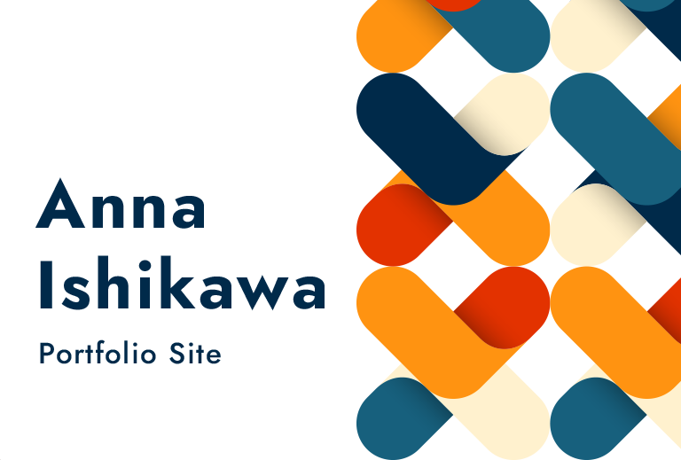
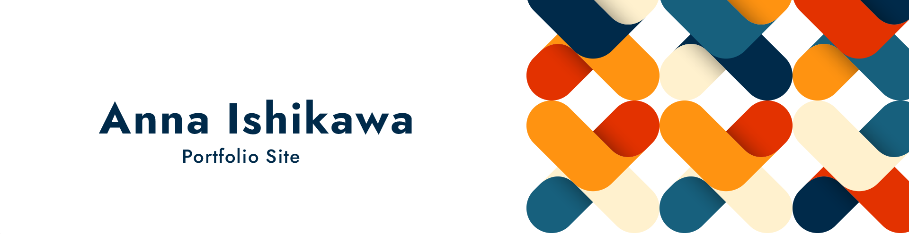
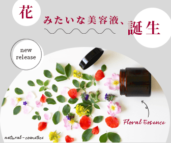

 
Profile
2014年から2019年までSEとして働いており、
WEBデザイナーになるため、2020年にスクールへ。
2021年からWEBデザイナーとして仕事をしています。
- 職種：
- WEBデザイナー（デザイン、ディレクション、簡単なコーディング）
- 得意なデザイン：
- シンプル、きれい
- スキル：
- Photoshop、illustrator、Adobe XD、HTML、CSS
Web Sites
Web Designs
- 制作期間
- 約3日
- ターゲット
- 30～50代の物件を探している方
- テーマカラー
- モノトーン、ベージュ
- コンセプト
- 施工事例やイベント情報を紹介するサイト（ゴールは住宅展示場に足を運んでもらうこと）
- 工夫点
-
物件写真をより魅力的に見せるため、写真の配置方法を調整したり、写真以外は主張のない色を使うようにしました。
イベント情報がゴールなのでTOPの上部に表示されるようにしています。

- 制作期間
- 約3日
- ターゲット
- 子供を伸び伸びと育てる環境を探している保護者の方
- テーマカラー
- 緑、黄緑、黄色
- コンセプト
- 子供の自主性を大切にし、遊ぶことに力を入れている幼稚園
- 工夫点
-
サイト名に因んだ葉っぱのモチーフを取り入れたり、写真の形を工夫して、幼稚園の楽しさが伝わるようなデザインにしました。
幼稚園探しをしている保護者はもちろん、今子供を預けている保護者も見たくなるようにコラムや行事写真を充実させています。

- 制作期間
- 約5日
- ターゲット
- 10～30代の男女、仕事・勉強などの作業場所を探している方
- テーマカラー
- 黄色
- コンセプト
- 見た人が行きたくなるコワーキングスペースのサイト
- 工夫点
-
見た人が実店舗に来店してくれることがゴールなので、楽しそうだと思ってもらえるように明るい色や形を使用して作成しました。
また、コワーキングスペースの雰囲気が伝わるように大きめに写真を配置しています。
Banner Designs
